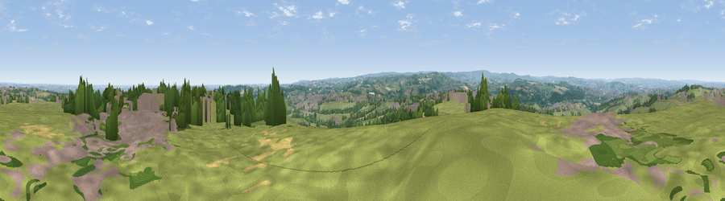

Viewpoint near Emley Moor
#15592 in England · top 20% of its area beats it · near Emley Moor · path 114 mWhere it is
The exact computed spot (SE 22075 12925). Click the marker for map links.
Public access: the nearest public right of way is about 114 m away — the final stretch may cross private land. Computed from Natural England's CRoW access layer and OpenStreetMap rights of way — not the legal definitive map. Always verify locally.
The view, rendered

A 360° render of this exact spot computed from the terrain model, tree cover and land cover — summer colours, afternoon light, calibrated against photographs of famous viewpoints. Real trees, hedges and buildings will differ in detail.
The panorama
Grey silhouette: terrain skyline in each direction (720 bearings, Earth curvature and refraction included). Dashed green: skyline with trees (+15 m) and buildings (+8 m) as obstacles. Blue strip: how far the ground is visible on each bearing.
Where the view opens
Wedge length = distance to the farthest visible ground on that bearing (vegetation-aware). Rings at 10, 25 and 50 km.
What fills the view
57% grassland · 19% woodland · 15% built-up · 9% cropland
Angular shares of the visible panorama (visual magnitude), not map area. Landscape diversity 0.50 (0–1 Shannon).
Key numbers
More beautiful places nearby
The staircase of upgrades: each row has a higher view potential than everything closer. Driving times are estimates from straight-line distance, calibrated against real road routing — check an actual route before setting out.
| Place | Direction | Drive | Score |
|---|---|---|---|
| Viewpoint near Emley Moor | SW · 1 km | ~2 min | 65.8 |
| Viewpoint near Grange Moor | N · 3 km | ~7 min | 69.8 |
| Castle Hill | W · 7 km | ~14 min | 70.2 |
| Viewpoint near Jackson Bridge | SW · 7 km | ~15 min | 73.5 |
| Viewpoint near Wharncliffe Side | SSE · 19 km | ~32 min | 75.0 |
| Viewpoint near Wharncliffe Side | SSE · 19 km | ~33 min | 75.2 |
| Viewpoint near Greenfield | WSW · 24 km | ~39 min | 76.0 |
| Viewpoint near Carrbrook | WSW · 26 km | ~42 min | 77.1 |
53.61242, -1.66781 · source: screening · position refined by local search. Computed location — check access rights before visiting.